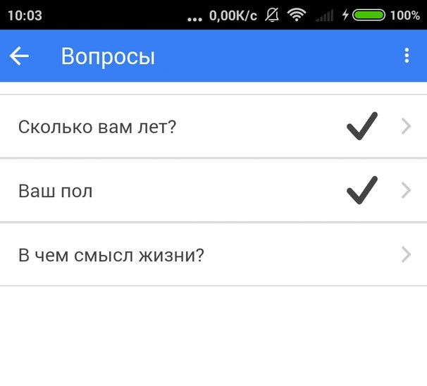

Мобильное приложение mobile-forms предостовляет пользователям возможность для проведения электронных опросов С помощью данного приложения пользователь может создавать, публиковать, проходить электронные опросы и просматривать данные на них ответы.
Для создания опроса необходимо авторизоваться в приложении через социальную сеть ВКонтакте и перейти в боковом меню в пункт Мои опросы. По нажатию кнопки со значком + будет открыто диалоговое окно создание опроса. В данном необходимо ввести требуемую информацию об опросе и создать вопросы опроса. Для сохранения созданного опроса небходимо вызвать диалоговое меню в левом верхнем углу экрана и нажать кнопку сохранить
.Для прохождения опроса необходимо выбрать интересующий опрос в списке опросов. На открывшемся экране необходимо нажать кнопку Пройти опрос. По нажатию данной кнопки будет открыт экран содержащий список всех вопросов выбранного опроса. Для ответа на вопрос необходимо нажать на соответсвующий вопрос из списка. При нажатии на вопрос будет открыт экран для ответа на вопрос, на котором, в зависимости от типа ответа и вопроса, пользователь отвечает на поставленный вопрос. Для завершения прохождения опроса необходимо вызвать диалоговое меню в левом верхнем углу экрана и нажать кнопку сохранить
Для просмотра ответов необходимо нажать на интересующий опрос в сприске опросов. На открвышемся экране необходимо выбрать вкладку ответы. На данной вкладке присутсвует элемент для выбора способа группировки ответов. При выборе способа группировки по пользователям, в списке ответов сначала будут показаны все пользователи прошедщие данный опрос. При нажатии на пользователя список раскрывается, показывая ответы данного пользователя на каждой вопрос опроса. При выборе способа группировки по вопросам, в списке ответов сначал отображаются все вопросы опроса. При нажатии на вопрос список раскрывается и выводятся ответы всех пользователей на соответсвующий опрос.
При возникновении каких либо вопросов по мобильному приложению обращайтесь по адресу: mineloveguitar@gmail.com или boris_traktor@yandex.ru